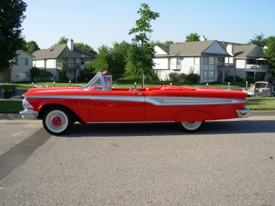

and sometimes downright fishy
thoughts on Technology and Leadership
by Herb Bowie
The Requirements Problem
One of the great myths of software development is that we can ask our customers to give us their requirements, that they will write them down for us, and we can then successfully build software based on those documents.
Watts Humphrey, the father of the Software CMM, puts it this way, in his seminal work, Managing the Software Process:
A common misperception is that we must start with firm requirements. There is a widespread but fallacious view that requirements are the customers’ job and that development should not start until they are explicitly defined. The fact is that the demand for firm and unchanging requirements is mostly wishful thinking….
Henry Ford expressed a similar idea a bit more succinctly when he famously said:
If I had asked people what they wanted, they would have said faster horses.
Steve Jobs, a more recent innovator, said something similar in a 1998 article in Business Week magazine:
It’s really hard to design products by focus groups. A lot of times, people don’t know what they want until you show it to them.
But then, for those of us who have heard of the Edsel (or the Zune, for that matter), we are also mindful of the dangers of excessive arrogance in regards to our customers’ desires. As Nathaniel S. Borenstein says, in his book Programming As If People Mattered: Friendly Programs, Software Engineering, and Other Noble Delusions:
You [the software developer] will need humility to recognize that the users are always the final and most appropriate judges of your work. Even though you’re the expert in interpreting your users’ comments and meeting their needs, their judgments of your work are final and without appeal.

So what is a poor software developer supposed to do?
Alan M. Davis offers good advice in his encyclopedic work, 201 Principles of Software Development:
Requirements are hard to understand and harder to specify. The wrong solution to this problem is to do a slipshod job of requirements specification, and rush ahead to design and code…. The right solution is to do whatever it takes to learn as many of the requirements as possible now. Do prototyping. Talk with more customers. Work for a month with a customer to get to know his or her job firsthand. Collect data. Do whatever it takes.
Although Davis also warns, in his later work Just Enough Requirements, about the dangers of going overboard here:
If you do not pay enough attention to requirements, you endanger the project’s success by introducing too much risk. If you pay too much attention to requirements, you overburden the project and raise the likelihood of being late and over-budget.
And Suzanne and James Robertson, writing in Mastering the Requirements Process, get a little closer to the Henry Ford and Steve Jobs insights:
The requirements analyst has to inject something new into the process: his vision of what the product might be. In other words, the requirements are not simply the passive interpretation of an existing piece of work, but contain inventions that will make the work easier, better, more interesting and more pleasant.
Taking all of this wisdom into account, here are what I would consider the key points to keep in mind about requirements.
Software requirements must be grounded in a solid understanding of your customers and the way they see the world.
Requirements analysis is a creative process that discovers or even invents new approaches to stating and addressing your customer’s wants and needs.
Requirements prioritization is essential, to provide focus to both your elicitation and delivery: trying to discover all possible requirements is an endless job, and creating a design that gives equal weight to all requirements is a recipe for disaster.
Requirements are dynamic. Change is inevitable, and the best way to cope with this reality is to try to discern the difference between requirements that are likely to be fundamental and unchanging vs. those that are likely to be subject to the latest whims of management and users.
Requirements validation requires us to show our customers what we propose to give them.
A certain degree of risk is inherent in the process, and your best approach is not to try to avoid risk altogether, but to try to keep the degree of risk within acceptable levels, while also being mindful of cost and schedule.
May 29, 2009
Next: Take the Agile Train